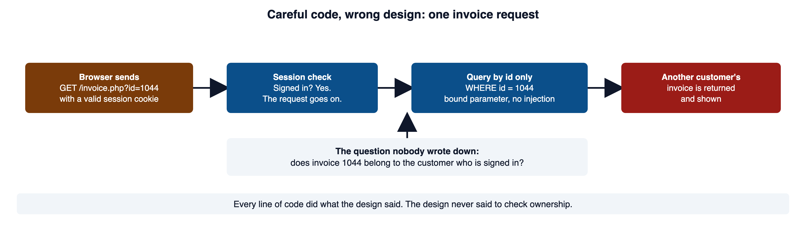
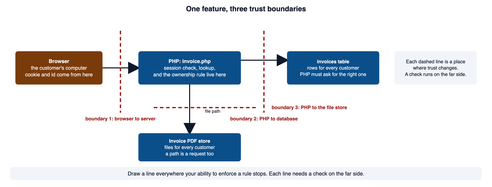
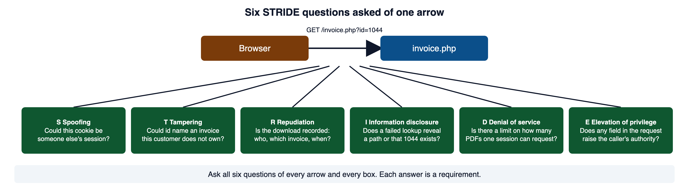
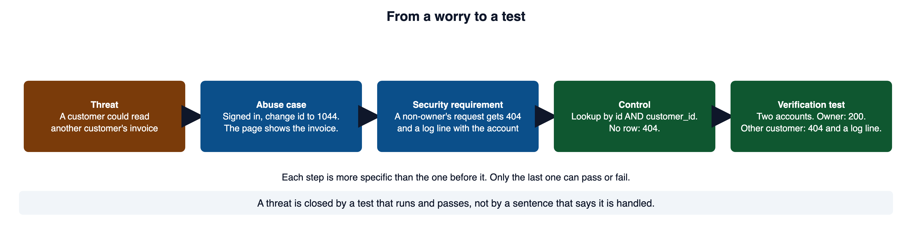
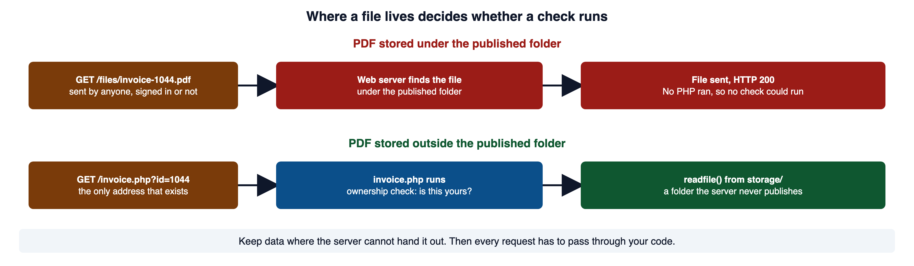
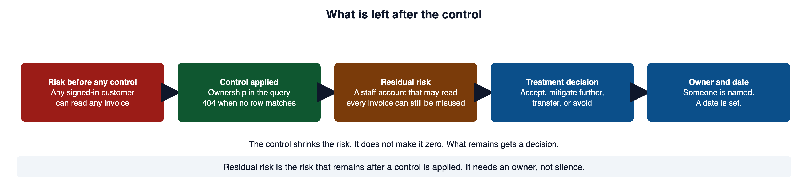
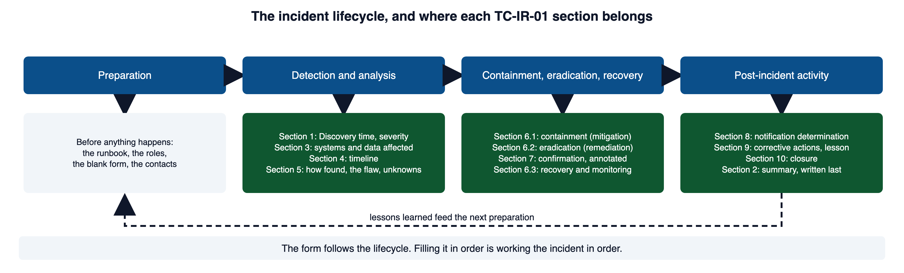
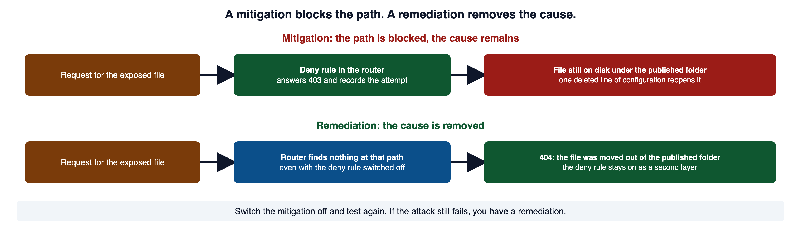

A billing page uses placeholders correctly, but the query selects only an invoice id. A signed-in customer changes that id and reaches someone else’s record. The code performs the intended query; the missing design rule is which customer may receive its result.
1Required reading
These three are required reading for the module. This page teaches everything the assignment and the quiz need; the readings give the same material in the industry's own words, which is what an advisory, a compliance checklist, or a design review will use.
- OWASP Top 10:2025 A06 Insecure Design. The category for "missing or ineffective control design." Its own words: "An insecure design cannot be fixed by a perfect implementation."
- OWASP Threat Modeling Cheat Sheet. The operative reference. It follows the same four stages as sections 3 to 9: decompose, identify threats, respond, review.
- CLARK: Threat and Risk Analysis. Laurie Williams's module on finding, analyzing, and ranking threats. CLARK needs a free account.
2Design flaws and implementation flaws
Most security fixes change code that does the wrong thing. This module is about code that does exactly what it was designed to do, where the design itself was wrong. The difference decides who can find the problem and how it gets fixed.
Picture a small billing site. A signed-in customer opens a page to read one of their invoices. The page picks the invoice from the number in the URL.
GET /invoice.php?id=1043 HTTP/1.1
Host: billing.example.com
Cookie: PHPSESSID=b7e2c1a9f04d5e6fHere is the code behind it. Read it looking for a coding mistake.
<?php
// WHY: A prepared query controls SQL syntax but does not enforce ownership when the required owner condition is absent.
require 'auth.php';
require_login();
// The invoice id comes straight from the URL and is the only thing that selects the row.
$invoiceId = $_GET['id'] ?? '';
$statement = $pdo->prepare('SELECT * FROM invoices WHERE id = :id');
$statement->execute(['id' => $invoiceId]);
$invoice = $statement->fetch(PDO::FETCH_ASSOC);
render_invoice($invoice);Vulnerable. Why: A prepared query controls SQL syntax but does not enforce ownership when the required owner condition is absent.
The query is parameterized, so there is no SQL injection. The request needed a valid session, so a stranger cannot reach it. Every line is careful. Now change the number in the URL to 1044, an invoice that belongs to a different customer. The page hands it over.
HTTP/1.1 200 OK
Content-Type: text/html
Invoice 1044 Customer: Dana Okafor Amount due: $2,150.00The code never asked the question that mattered: may this customer read this invoice? The design said, in effect, that any signed-in customer may ask for any invoice by number. The code did that perfectly. This is an authorization bypass through a user-controlled key (CWE-639). The key is the id in the URL.

OWASP A06 Insecure Design is the category for the second kind. Its text draws the same line. A secure design can still have implementation bugs. An insecure design cannot be fixed by a perfect implementation, because the control was never created. Threat modeling is the discipline that finds such rules before they are scattered, inconsistently, through twenty PHP pages.
CWE-639: Authorization Bypass Through User-Controlled Key is the formal entry. It describes a system that "does not prevent one user from gaining access to another user's data or record by modifying the key value identifying the data." The A06 page in section 1 is the source for the design-versus-implementation distinction.
3The four questions of threat modeling
Threat modeling has collected a lot of ceremony over the years. Underneath it are four questions. You would ask the same four about a bridge, a checkout counter, or a login form.
- What are we working on?
- What can go wrong?
- What are we going to do about it?
- Did we do a good enough job?
Question 1 is answered by a diagram of one feature, which is section 4. Question 2 is answered by walking a checklist across that diagram, which is STRIDE in section 5. Question 3 maps a control to each threat worth acting on, which is sections 6 to 9. Question 4 is the one teams skip. It turns an opinion into engineering. "Use authorization" is not an answer to question 4. It becomes one when the team names which people may take which actions on which records, then writes a test for an allowed case and a denied case.
The four questions come from the Threat Modeling Manifesto, which states them in exactly these words. It defines threat modeling as "analyzing representations of a system to highlight concerns about security and privacy characteristics." The OWASP cheat sheet in section 1 builds its whole structure on the same four.
4Decompose the feature into a data-flow diagram
You cannot reason about "the application." You can reason about one feature. Take the invoice page from section 2 and write down how a request moves through it.
Browser -> GET /invoice.php -> session check -> invoices table -> invoice PDF storeA data-flow diagram names five kinds of thing and draws the lines where trust changes. Here is that inventory for the invoice feature.
| Element | What it is | In the invoice feature |
|---|---|---|
| Actors | who or what starts a flow, inside or outside your control | anonymous visitor, signed-in customer, billing administrator, the payment provider |
| Assets | what has value, and so what an attacker wants | invoice contents, customer identity, the amount owed, session integrity, the billing page staying up |
| Entry points | every place data can arrive | the id in the URL, the session cookie, request headers, any posted form field |
| Processes | code that transforms or decides | the PHP route, the session handler, the authorization check, the database layer |
| Data stores | where state persists | the invoices table, session storage, the PDF file store, the access log |
| Trust boundaries | lines where the level of trust changes | browser to server, PHP to database, PHP to the file store, application to the payment provider |
Where do the lines go? Everywhere data passes from a place you control to a place you do not, or back.

A data-flow diagram does not need artistic detail. Boxes, arrows, labels, and boundary lines are enough when they make the assumptions visible. The diagram is not the deliverable. The argument the team has while drawing it, about which arrow is really checked, is the deliverable.
OWASP: Threat Modeling Process, now marked historical, is the source for the element names. It says entry points "define the interfaces through which potential attackers can interact with the application." It says a data-flow diagram highlights "the privilege or trust boundaries." The cheat sheet in section 1 names the same elements: trust boundaries, data flows, data stores, processes, and external entities.
5Apply STRIDE to the flow
STRIDE is a checklist of six things that can go wrong. Each one is the opposite of one security property. Walk it across every element and every arrow in your diagram. It prompts questions you would not otherwise think to ask.
| Category | Property it violates | Invoice-feature example |
|---|---|---|
| Spoofing | Authentication | a stolen session cookie is accepted as the customer, because holding the cookie is treated as identity |
| Tampering | Integrity | the customer edits the id in the URL to another customer's invoice (CWE-639) |
| Repudiation | Accountability | an invoice is downloaded and nothing records who asked for it or when |
| Information disclosure | Confidentiality | a verbose PHP error shows a file path, or a refusal confirms that an invoice number exists |
| Denial of service | Availability | a script asks for thousands of PDF renders and exhausts the server |
| Elevation of privilege | Authorization | the request body carries role=admin and the server honors it, which is improper privilege management (CWE-269) |
Take the single arrow from the browser to GET /invoice.php and ask all six questions of that one arrow.

Six prompts against one arrow produced six requirements. None of them needed you to already know what the vulnerability was. That is what the technique buys you.
Microsoft: STRIDE model is the original vendor's description of the six categories, from the team that introduced them. The OWASP cheat sheet in section 1 gives the property each one violates, and names repudiation's property "accounting."
6From a threat to a security requirement
A threat written as a worry cannot be closed. A threat written as an abuse case can be tested, assigned, and argued with.
Here is the abuse case for the invoice feature. A signed-in customer changes id in /invoice.php?id=1043 to another customer's number. The route fetches the invoice without checking ownership, so one customer reads another's billing data. The asset is invoice confidentiality. The expected control: the lookup selects an invoice only when it belongs to the current session. The verification: two accounts; the owner succeeds, and the other customer is refused without learning whether the invoice number exists.
Notice how much more specific that is than "add authorization." The test names two accounts and two outcomes. It also carries one subtle requirement: the refused customer must not learn whether the invoice exists. That is a design decision someone had to make on purpose. A uniform 404 response can avoid explicitly confirming that an inaccessible record exists; other response differences still need review.
How does a threat turn into something that can pass or fail? Each step below is more specific than the one before it.

The requirement drives the fix. The lookup carries the ownership rule. The type of the id is checked before use. A request for an invoice the customer does not own gets the same 404 a missing invoice would, so the status and body do not confirm whether the row exists. This alone does not establish timing equivalence.
<?php
// WHY: Placeholders keep bound values separate from the SQL statement structure.
require 'auth.php';
$currentUser = require_login();
$invoiceId = filter_input(INPUT_GET, 'id', FILTER_VALIDATE_INT);
if ($invoiceId === false || $invoiceId === null) {
http_response_code(400);
exit('Invalid request');
}
// Ownership is part of the lookup, so a row for another customer is never selected.
$statement = $pdo->prepare(
'SELECT * FROM invoices WHERE id = :id AND customer_id = :customer'
);
$statement->execute([
'id' => $invoiceId,
'customer' => $currentUser['id'],
]);
$invoice = $statement->fetch(PDO::FETCH_ASSOC);
if ($invoice === false) {
http_response_code(404);
exit('Not found');
}
render_invoice($invoice);Secure. Why: Placeholders keep bound values separate from the SQL statement structure.
A requirement is closed by a test that runs and passes, not by a sentence in a document that asserts it. The OWASP Application Security Verification Standard is where professional teams get requirements phrased this way. It describes itself as "a list of requirements for secure development." The A06 page in section 1 says the same from the other direction: "Add security language and controls to user stories."
The functions in the code have their own pages. PHP Manual: PDOStatement::execute documents passing the array of named values. PHP Manual: http_response_code sets the status. MDN: 403 Forbidden confirms the 404 choice. A server "may decide to send a 404 response instead of a 403 if acknowledging the existence of a resource to clients with insufficient privileges is not desired." The OWASP Abuse Case Cheat Sheet, now archived, has the record format behind the abuse-case definition.
7Secure software architecture
Requirements say what must be true. Architecture decides where each rule lives so that it is true everywhere.
Three architecture decisions decide most of what a PHP application can be made to do.
- Where a control lives. A check written inside each page is written twenty times and forgotten once. A check in one shared function, which every page calls first, is written once and reviewed once. The portal's own design document names three shared includes,
db.php,auth.php, andlayout.php, that every page requires. That is the spot where a shared check belongs. - Where data lives. A web server hands out any file under its published folder, and no PHP runs when it does. The portal's
router.phpsays so in a comment: anything that exists in the project folder is served as it is. Data that sits there is reachable by anyone who knows or guesses its address. - What each part is allowed to do. The database account a page uses, the folders PHP can write, the routes the server exposes. Each one is a ceiling on damage.
Where a file lives decides whether any check runs at all. Here is the invoice PDF stored under the published folder, with the page linking straight to it.
<?php
// WHY: A predictable public file URL can bypass the application route that was supposed to enforce access.
require 'auth.php';
require_login();
// The PDF sits in webroot/files/, which the server publishes.
// This link works for anyone who has it, signed in or not.
$id = (int) ($_GET['id'] ?? 0);
echo '<a href="/files/invoice-' . $id . '.pdf">Download PDF</a>';Vulnerable. Why: A predictable public file URL can bypass the application route that was supposed to enforce access.
GET /files/invoice-1044.pdf HTTP/1.1
HTTP/1.1 200 OK
Content-Type: application/pdfNo PHP ran for that second request. The server found a file and sent it. Here is the same feature with the PDFs in a folder the server never publishes, and the page as the only way in.
<?php
// WHY: Placeholders keep bound values separate from the SQL statement structure.
require 'auth.php';
$currentUser = require_login();
$invoiceId = filter_input(INPUT_GET, 'id', FILTER_VALIDATE_INT);
if ($invoiceId === false || $invoiceId === null) {
http_response_code(400);
exit('Invalid request');
}
// The ownership rule runs here, on every request, because there is no other path to the file.
$statement = $pdo->prepare(
'SELECT pdf_name FROM invoices WHERE id = :id AND customer_id = :customer'
);
$statement->execute(['id' => $invoiceId, 'customer' => $currentUser['id']]);
$row = $statement->fetch(PDO::FETCH_ASSOC);
if ($row === false) {
http_response_code(404);
exit('Not found');
}
// storage/ is beside the published folder, not inside it.
header('Content-Type: application/pdf');
readfile(__DIR__ . '/../storage/invoices/' . $row['pdf_name']);Secure. Why: Placeholders keep bound values separate from the SQL statement structure.

OWASP Proactive Controls, C4: Address Security from the Start is the source for the first paragraph. It says "creating a secure architecture prevents vulnerabilities before they even become part of the application." It calls a secure architecture pattern "a standard solution that has been reviewed and hardened against known security threats." PHP Manual: readfile documents the function that sends the file, and W3Schools: PHP readfile() Function has a runnable example.
8Secure-design principles
The choice of control is not invented fresh each time. A short list of principles guides it. Saltzer and Schroeder wrote them down in 1975, and they have survived every change of platform since. That is a fair sign they describe something structural.
Least privilege
Give PHP, its database account, and each user only what the job needs. A page that reads invoices does not need a database account that can drop tables. A customer role does not need the actions a billing administrator has. When something goes wrong, the privileges in force are the ceiling on the damage. A request that carries its own elevated role and is believed is the opposite of this principle, and it is improper privilege management (CWE-269).
Fail-safe defaults
Start from denial. If a role is missing, a policy lookup fails, or a session is invalid, the protected action does not run. Write the gate so that the allow path is the only path that reaches the action.
<?php
// WHY: The rejection branch must stop or exclude further processing so denied input cannot reach the protected operation.
// Deny by default: the allow branch is the only path that reaches the action.
if (!$policy->allows($currentUser, 'read', $invoice)) {
http_response_code(404);
exit('Not found');
}
stream_invoice_pdf($invoice);Secure. Why: The rejection branch must stop or exclude further processing so denied input cannot reach the protected operation.
The inverted version looks the same and is not.
<?php
// WHY: A response status alone does not prevent subsequent protected statements from running.
// If the policy call returns null, this rejection condition is false and execution continues. An uncaught exception stops execution.
if ($policy->denies($currentUser, 'read', $invoice)) {
http_response_code(404);
exit('Not found');
}
stream_invoice_pdf($invoice);Vulnerable. Why: A response status alone does not prevent subsequent protected statements from running.
What happens to each gate when the policy lookup fails? Run both against a policy that returns null, which is what a failed lookup often returns.
<?php
// A policy object whose lookup failed. It returns null instead of true or false.
class Policy
{
public function denies(string $user, string $action, int $invoice): ?bool
{
return null; // the lookup failed; nobody decided
}
public function allows(string $user, string $action, int $invoice): ?bool
{
return null; // the same failed lookup
}
}
$policy = new Policy();
// Deny-first gate: the action runs unless the policy says "denied".
if ($policy->denies('rae', 'read', 1044)) {
echo "Deny-first gate: refused\n";
} else {
echo "Deny-first gate: invoice streamed\n";
}
// Allow-first gate: the action runs only when the policy says "allowed".
if (!$policy->allows('rae', 'read', 1044)) {
echo "Allow-first gate: refused\n";
} else {
echo "Allow-first gate: invoice streamed\n";
}Deny-first gate: invoice streamed
Allow-first gate: refusedComplete mediation
Check authorization on every protected request, on the server. Hiding a button in the page is a user-interface choice, not a control. Module 01 section 4 explained why: the browser is the attacker's computer, and a request can be typed by hand without your page ever loading. The same reasoning rejects any authority the client claims about itself.
<?php
// WHY: A role chosen by the requester is a claim, not an authoritative permission decision.
// The request states its own role, and the server believes it.
$role = $_POST['role'] ?? 'customer';
if ($role === 'admin') {
delete_invoice($_POST['id']);
}Vulnerable. Why: A role chosen by the requester is a claim, not an authoritative permission decision.
<?php
// WHY: The rejection branch must stop or exclude further processing so denied input cannot reach the protected operation.
$currentUser = require_login();
// The role is read from the server's session record, never from the request body.
if ($currentUser['role'] !== 'admin') {
http_response_code(403);
exit('Request denied');
}
delete_invoice($_POST['id']);Secure. Why: The rejection branch must stop or exclude further processing so denied input cannot reach the protected operation.
A protected action reached with no server-side authorization check at all is missing authorization (CWE-862). It is one of the most common design gaps in real applications.
Separation of privilege
The highest-impact actions may require two independent conditions: an administrator role together with a recent second factor, or a requester plus a separate approver. One stolen credential should not be enough for the worst thing the system can do. Many teams call this separation of duties.
Defense in depth
No single control is trusted to be perfect. The invoice fix in section 6 carries ownership in the query. The gate above adds an explicit policy check. Least privilege on the database account caps what a slip could reach. Each layer is chosen so that a failure in one does not expose the asset on its own.
Minimize the attack surface
Every entry point, parameter, and served file is something an attacker can reach and you must defend. Remove the ones the feature does not need. A debug parameter, an unused admin route, or a data file in a web-served directory each widen the surface for no benefit.
Secure defaults
The safe configuration is the one that ships. Cookies carry HttpOnly and Secure out of the box, error display to the browser is off in production, and a new account starts with the least authority rather than the most. Security that depends on someone remembering to turn it on is security that is off.
Open design
The security of a system should not depend on hiding the PHP filename, the database schema, or the algorithm. Keys and credentials are secret. The design should stay safe when its operation is fully known. Obscurity can raise an attacker's effort, but it must never be the thing holding the door shut.
Economy of mechanism
Keep the design as small and simple as it can be. A control nobody can explain in a sentence is a control nobody can review.
Saltzer and Schroeder, The Protection of Information in Computer Systems, section I.A.3 is the 1975 source. Its wording for fail-safe defaults is "base access decisions on permission rather than exclusion." For complete mediation it says "every access to every object must be checked for authority." CWE-862: Missing Authorization and CWE-269: Improper Privilege Management are the formal entries for the two code examples.
9Rank and treat the threats you find
A real pass produces more threats than a team can address at once. Ranking turns the list into a plan. For each threat, record the fields below.
| Field | Why it is there |
|---|---|
| Likelihood, with reasoning | the reasoning is what survives review; the label on its own is not evidence |
| Impact, on which asset and on which of confidentiality, integrity, availability | names what is actually lost, which is what a non-specialist asks first |
| Priority | forces a comparison against the other threats rather than against zero |
| Treatment: mitigate, eliminate, transfer, or accept | "accept" is a legitimate answer when it is a decision rather than an oversight |
| Control | what will actually be built |
| Residual risk | what is still possible after the control, in one sentence |
| Owner and date | an item with no owner is not a plan |
| Verification test | how question 4 gets answered |
Risk is likelihood multiplied by impact. OWASP's rating method scores each from 0 to 9 and calls the result low below 3, medium from 3 to 6, and high from 6 to 9. Numbers do not create truth. A plain high, medium, or low with a clear reason is more useful than a precise-looking score built from guesses, because the reason is the part a reviewer can disagree with.
What is left once the control is in place, and who decides what to do with it?

The four treatments are the cheat sheet's. Mitigate adds a control that lowers likelihood or impact. Eliminate removes the feature or the data so the threat has nothing to act on. Transfer moves the cost to someone else, such as an insurer or a vendor. Accept records that the risk stays, with a reason and a name. A threat you have identified, priced, and consciously accepted is in better shape than one you mitigated by reflex without asking what it cost. What is never acceptable is silent acceptance, where nobody decided and nobody can say who would have.
Here is one row from a threat register, written so that it can be checked.
Threat: a signed-in customer reads another customer's invoice by changing id
Likelihood: high; the id is visible in the URL and sequential
Impact: high; confidentiality of every invoice
Priority: 1
Treatment: mitigate
Control: lookup by id AND customer_id; uniform 404; log the account
Residual risk: a staff account that may read all invoices can still be misused
Owner, date: billing team, end of sprint 21
Test: two accounts; owner gets 200, other customer gets 404 and a log lineOWASP Risk Rating Methodology is the source for likelihood times impact, the 0 to 9 scale, and the three bands. It also says "not all risks are worth fixing." NIST glossary: residual risk gives the definition used above, "portion of risk remaining after security measures have been applied." NIST traces it to SP 800-30 Rev. 1. The cheat sheet in section 1 names the four responses: mitigate, eliminate, transfer, accept.
10Incident-response basics
Threat modeling is what you do before the worst day. Incident response is what you do on it. The two share one idea: a plan written down and tested is worth more than a plan improvised under pressure. The words below are the ones the TC-IR-01 form and TechCorp's runbook use, and every incident report in this course is written with them.
What an incident is
Slow pages, one PHP error, a forgotten password, and a scanner alert on its own are events. None of them is an incident until someone shows unauthorized access or change. A scanner alert is a claim, and a claim is verified before anything is declared.
A runbook and a playbook
In this course the carrier's Incident Response Playbook sets the minimum any insured company must meet. TechCorp's runbook turns that minimum into steps for three people, one server, and a support desk that opens at seven. The runbook carries roles too, so it borrows from both shapes. That is normal for a small team with one document.
Who does what
An incident needs a few jobs done at once, and each job needs one named person. The names vary by company. The jobs do not.
| Job | What the person does | TechCorp's name for it |
|---|---|---|
| Direct the response | decides, assigns, tracks; does not type | Incident Commander |
| Hands on the system | contains, changes, restores, on the IC's instruction | System actions |
| Record everything | keeps the log of every action, time, and person; preserves evidence | Evidence and records |
| Speak outside | the one voice to the carrier, the press, and customers | External communication, the owner |
| Decide the legal questions | whether notification is required | Panel counsel, through the carrier |
| Answer the phones | reads the holding statement and nothing else | Support desk |
On a three-person team the IC and the person doing system actions may briefly be the same person. The second person joins as soon as they are reachable, because the IC should be deciding, not typing. A named alternate takes over the IC role if the first person cannot be reached within a set time.
Severity tiers
A severity is a label chosen at Discovery that sets the commitment: who is called, how fast, and whether people are woken up. It is a decision about response, not a measurement of the attacker. The IC assigns it with one sentence of justification, and revises it as the facts change.
| Tier | What it usually means | What it commits the team to |
|---|---|---|
| 1, critical | data is known or reasonably suspected to have left the system, or someone has acted as a user who is not that user | drop everything, at any hour; IC designated at once; carrier called the same day |
| 2, high | a confirmed way to reach or change protected data exists, with no evidence yet that it was used | same business day; containment in place before the day ends |
| 3, moderate | one account or one machine affected, no evidence protected data was reached | within one business day |
| 4, low | an unsuccessful attempt, or a policy violation with no impact | next business day; recorded, not escalated |
NIST names three things that decide where an incident lands. The functional impact is what the business can no longer do. The information impact is what data was read, changed, or taken. Recoverability is how much effort it takes to get back. A tier definition that leaves a real finding fitting two rows is itself a defect in the runbook.
The lifecycle
NIST SP 800-61 Revision 2 described four phases: preparation; detection and analysis; containment, eradication, and recovery; and post-incident activity. Revision 3, published in April 2025, supersedes Revision 2 and integrates incident response with the NIST Cybersecurity Framework 2.0. TechCorp's fictional runbook retains the historical Revision 2 phase names. The Orientation incident-reporting guide explains how this course relates to the current guidance.
Which section of the incident report belongs to which phase?

Preparation is everything that exists before the incident. The roles, the contact card, the runbook, and the blank report form. Logging that records enough to reconstruct what happened. Backups that have been restored at least once. All of it is cheap before an incident and impossible to create during one.
Detection and analysis starts at Discovery. Someone reports what they saw and writes down the time. The IC is designated, a severity is assigned, and evidence is preserved before anything is changed. An analyst establishes what happened and what condition allowed it. The analysis also records what it could not determine and why.
Containment limits ongoing harm without yet removing the cause: a deny rule in front of the affected path, the portal taken offline, every session invalidated, every credential rotated. NIST's own words: containment "provides time for developing a tailored remediation strategy." It happens before the analyst's determination is in, because it cannot wait for it.
Eradication removes the cause. NIST describes it as eliminating the components of the incident and identifying and mitigating the vulnerabilities that were exploited. The fix is written as pseudocode first, so that what moves, what changes, and what fails closed is the decision that gets reviewed. Then the code. A second person reviews both before anything is deployed. Then the fix is verified by checks that are annotated with what each one proves and what it does not.
Recovery restores service in a controlled order and applies heightened monitoring for a set period, so that a recurrence is seen. At the end of the period the remediation is confirmed still to hold under test. Only the IC declares the incident closed, and only when the written report is finished.
Post-incident activity is the lessons-learned meeting, held within days of closure. It is blameless: its subject is the system conditions that permitted the incident, never the individuals involved. Every corrective action leaves the meeting with a named owner and a target date. The gaps that slowed the investigation are findings too, and they feed the next round of preparation.
Mitigation and remediation
Here is a mitigation for the billing site's exposed PDF folder from section 7, placed in the router that the built-in server runs for every request. It buys time. It removes nothing.
<?php
// WHY: The rejection branch must stop or exclude further processing so denied input cannot reach the protected operation.
// Stopgap: refuse any request whose path starts with the exposed folder.
// This is a MITIGATION. The files are still under the published folder.
$path = parse_url($_SERVER['REQUEST_URI'] ?? '/', PHP_URL_PATH) ?: '/';
if (str_starts_with($path, '/files/')) {
error_log('deny rule: ' . $path);
http_response_code(403);
exit("Forbidden\n");
}Secure. Why: The rejection branch must stop or exclude further processing so denied input cannot reach the protected operation.
GET /files/invoice-1044.pdf HTTP/1.1
HTTP/1.1 403 Forbidden
ForbiddenThe remediation moves the folder and changes the page that reads from it, which is the secure example in section 7. After it, the same request gets a 404 even with the deny rule switched off, because there is no file at that address to serve.
mv webroot/files app-root/storage/invoicesWhat does each one change, and what does each one leave behind?

Keep the mitigation in place after the remediation. It is now a second layer, which is defense in depth from section 8, rather than the defense.
Preserve the evidence first
Before anyone changes anything, copy what is there. NIST's guidance is to acquire evidence from a system as soon as one suspects an incident. Keep a log of each item. The log records what the item is and where it came from, who collected it, the time and date with the time zone, and where it is stored. A rebuild that feels decisive destroys the answers to the only questions that matter: how the actor got in, what they reached, and whether they are still there.
# Preservation copy: keep the original timestamps, then record a hash of the copy.
cp -p webroot/data/seed.sql incident/seed.sql.2026-08-24T0920
sha256sum incident/seed.sql.2026-08-24T0920 | tee incident/hashes.txtc8b067e1671583177155c17517dc85450e213e9c188a7d2a483005d38671a702 incident/seed.sql.2026-08-24T0920cp -p keeps the file's original modification time, which is itself evidence of when it last changed. The hash lets anyone later prove the copy is the one taken that morning. The matching line in the IC log reads like this.
2026-08-24 09:20 PT team lead preservation copies of the application directory and
data/portal.sqlite taken into the incident folder;
hashes recorded in incident/hashes.txtHow the TC-IR-01 form follows the lifecycle
The form has ten sections. Each one belongs to a phase, which is why filling it in order is working the incident in order.
| Form section | Phase | What goes there |
|---|---|---|
| 1. Administrative details | detection and analysis | report id, severity with its justification, Discovery time with time zone, earliest established activity, who the IC is, when the carrier was told, status |
| 2. Executive summary | written last | what happened, what was taken, the root cause in one sentence, what was done, where things stand |
| 3. Systems and data affected | detection and analysis | each asset, what it holds, and whether it was read, taken, changed, or exposed |
| 4. Timeline | detection and analysis | every event with a time and the source that proves it; attacker actions and responder actions kept apart |
| 5. Detection and analysis | detection and analysis | how it was really found, the flaw with its OWASP category and CWE and whether it is in code, configuration, or design, and what could not be determined |
| 6.1 Containment | containment | each stopgap, labeled as a mitigation, with what it does not protect against |
| 6.2 Eradication | eradication | the remediation in three parts: identified against the determination, pseudocode, then code with its second-person review |
| 6.3 Recovery | recovery | how service was restored, the monitoring applied and for how long, what counts as recurrence |
| 7. Confirmation, annotated | eradication | one entry per check: what was performed, what resulted, and what the check proves and does not prove; at least one check that passes with every mitigation removed |
| 8. Notification determination | post-incident | who decided whether customers must be told, on what basis, with the carrier's involvement |
| 9. Post-incident actions | post-incident | every corrective action with owner, date, and status; the lesson from the blameless review |
| 10. Closure and attestation | recovery and post-incident | the IC's signature, only when service is restored, monitoring is complete, and section 7 is finished |
What OWASP A09 names
The incident report's section 5.3, what the analysis could not determine, is usually long on a system that records little. OWASP has a category for that condition. A09:2025 Security Logging & Alerting Failures names it. Its list includes these conditions. Auditable events such as sign-ins, failed sign-ins, and high-value transactions are not logged, or are logged inconsistently. Logs are not monitored for suspicious activity. The application cannot detect, escalate, or alert in near real time. Alerts cannot be handled because "the playbook for the use case is incomplete, out of date, or missing." No incident response and recovery plan has been established or adopted. When a runbook limit is a recording gap, that is the category to cite by name.
The sources for this section. NIST SP 800-61 Rev. 2, Computer Security Incident Handling Guide defines event and incident in its section 2.1 and the four phases in section 3. Its 3.3.1 has containment and the remediation sentence, 3.3.2 the evidence log, 3.3.4 eradication and recovery, 3.2.6 the three prioritization factors, and 3.4.1 the lessons-learned meeting. NIST SP 800-61 Rev. 3, April 2025, supersedes it and says "playbooks provide actionable steps or tasks for people to perform during various scenarios." PagerDuty: What is a Runbook? gives the runbook-versus-playbook split used above. PagerDuty Incident Response: Different Roles describes the Incident Commander, who delegates all repair actions, and the scribe. PagerDuty Incident Response: Severity Levels is the source for "treat it as the higher one." NIST glossary: mitigation and NIST glossary: remediation give the two definitions from NIST SP 800-216. sha256sum(1) documents the hash command, and PHP Manual: str_starts_with with W3Schools: PHP str_starts_with() Function the function in the deny rule.
11Common misconceptions
✕"STRIDE is the threat model."
STRIDE is one prompt inside a larger process. A list of STRIDE hits with no diagram, no ranking, and no verification is a brainstorm, not a model.
✕"We threat-model once, at the start."
Update the model when the data flows, roles, dependencies, or deployment change. A model that describes a system you no longer run is worse than none, because it is trusted.
✕"Authentication solves access control."
Identity is an input to authorization, not a blanket permission. Knowing who is asking says nothing about whether they may have this record.
✕"A high risk score proves the flaw is exploitable."
A risk ranking supports a decision about where to spend effort. Evidence supports a conclusion about exploitability. Do not let a number stand in for a test.
✕"A parameterized query means the request is authorized."
Parameterization decides how the database reads a value. It says nothing about whether this user may see the row that comes back. Those are separate defects with separate fixes.
✕"A control removes the risk."
A control shrinks the risk. What remains is the residual risk, and it needs its own owner and decision.
✕"The deny rule fixed it."
A deny rule is a mitigation. The cause is still there, and one deleted line brings the incident back. The finding stays open until the cause is removed and verified with the rule switched off.
✕"Restart the server, then figure out what happened."
Restarting destroys the evidence that would tell you. Preserve first, then contain, then change.
✕"Threat modeling requires a security team."
It requires a diagram, six prompts, and an hour. The version you actually do is worth more than the formal one you defer.
12Check your understanding
Work these before you read the answers.
- A query is perfectly parameterized and still returns another customer's invoice. What kind of defect is this, and why can careful code not remove it?
- Which STRIDE category covers pretending to be another user, and which security property does it violate?
- Which STRIDE category fits an ordinary user reaching an admin-only route, and which property does it violate?
- What does a threat model identify before any control is selected?
- State what fail-safe defaults require, and describe the tempting wrong version of the same check.
- What does complete mediation require, and why is hiding a button not enough?
- What does least privilege reduce when an account is compromised?
- What are the three things that turn "use authorization" into a treatment worth writing down?
- Write a security requirement for the invoice feature that two engineers could not disagree about.
- Where does a data file have to live so that every request for it passes through your code, and what architecture decision is that?
- Define residual risk, and name the residual risk left after the invoice ownership rule.
- What is the difference between a mitigation and a remediation, and what single test tells them apart?
- Name the four phases of NIST SP 800-61 Revision 2, and say which TC-IR-01 sections belong to containment and eradication.
- Who is the Incident Commander, how many are there at once, and what does the IC not do?
- Why is evidence preserved before anything is changed, and what three facts does the evidence log record for each item?
- What does OWASP A09 name, and when do you cite it in a runbook review?
Answers: (1) a design flaw, an authorization bypass through a user-controlled key. The code is already doing what the design said, so the missing ownership rule has to be added to the design. (2) spoofing, which violates authentication. (3) elevation of privilege, which violates authorization. (4) the actors, assets, entry points, processes, data stores, and trust boundaries of the feature, because a control with no named asset defends nothing. (5) the action runs only after an explicit allow, so a missing role or a failed lookup ends in refusal. The wrong version checks for denial first and falls through to the action when the policy returns null or throws. (6) authorization is checked on every protected request on the server; hiding a button changes only the page, and the request can be typed by hand. (7) the capabilities available to the compromised account, which caps the damage. (8) a named control, an owner, and a verification test someone else can run. (9) a request for an invoice whose customer does not match the session must return 404, must not vary in timing, and must be logged with the account. (10) outside the folder the web server publishes, so the only path to it is a PHP page that checks ownership; that is a decision about where data lives, which is architecture. (11) the portion of risk remaining after a control is applied; a staff account that may read every invoice can still be misused. (12) a mitigation reduces impact or likelihood while the cause remains, a remediation removes the cause; switch the mitigation off and run the attack again. (13) preparation; detection and analysis; containment, eradication, and recovery; post-incident activity; containment is section 6.1, and eradication is 6.2 with its confirmation in 7. (14) the single person directing the response; exactly one; the IC does not perform the repair actions, and delegates them. (15) because cleaning or rebuilding destroys the record of how the actor got in and what they reached. The log records what the item is and where it came from, who handled it and when with the time zone, and where it is stored. (16) Security Logging & Alerting Failures: events not logged, logs not monitored, no alerting, a missing or stale playbook, no incident response plan; cite it where a runbook limit is a recording gap.
13References and further study
The three required readings in section 1 and the sources linked through the lecture are the main references. Each entry below names what it confirms.
- CWE-219: Storage of File with Sensitive Data Under Web Rootcwe.mitre.org
and CWE-552: Files or Directories Accessible to External Parties. The two entries behind the incident note in section 7, which are also the ones the worked example TC-IR-001 cites.
- NIST SP 800-61 Rev. 2 publication pagecsrc.nist.gov
The record that Revision 2 was withdrawn on April 3, 2025 and superseded by Revision 3, which section 10 states.
- NIST SP 800-30 Rev. 1, Guide for Conducting Risk Assessmentscsrc.nist.gov
The source the NIST glossary cites for residual risk in section 9.
- NIST glossary: risk responsecsrc.nist.gov
NIST's five responses, accept, avoid, mitigate, share, transfer, beside the cheat sheet's four in section 9.
- OWASP Secure Product Design Cheat Sheetcheatsheetseries.owasp.org
Least privilege, defense in depth, secure defaults, minimize the attack surface, and fail securely, as a product team applies them; confirms the principle names in section 8.
- CLARK: Software Security Principlesclark.center
Beginner-friendly slides that connect least privilege, fail-safe defaults, complete mediation, and open design to concrete architecture decisions, which is section 8 in more depth.
- CLARK: Software Design for Securityclark.center
Heather Lipford's module on designing with security in mind, which is section 7 in more depth.
Videos.